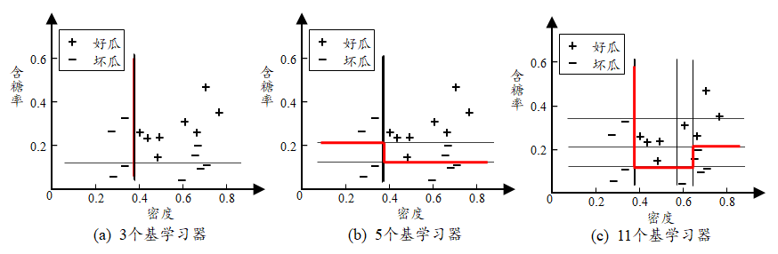

2 Boosting
Boosting 是一系列将弱学习器迭代提升为强学习器的算法，这一类算法的工作机制：
- 先从初始训练集训练一个基学习器
- 根据基学习器的表现，调整训练样本，让先前基学习器做错的样本受到更多关注
- 基于调整后的样本分布，训练下一个基学习器，直到训练的基学习器数目达到 T
- 最终的结果是 T 个学习器的加权结合，即 H(x)=\sum_{t=1}^T\alpha_th_t(x)
AdaBoost
衡量 H(x) 的损失函数，为了良好的数学性质，使用的是指数损失，其中 f(x) 是真实标记。 $$ \ell(H|\mathcal{D})=E_{x\sim\mathcal{D}}(e^{-f(x)H(x)})=\sum_{x\sim D}D(x)e^{-f(x)H(x)}=\sum_{i=1}^{|D|}[P(f(x_i)=1|x_i)e^{-H(x_i)}+P(f(x_i)=-1|x_i)e^{H(x_i)}] $$ 这里 \mathcal{D} 指的是样本的权重分布，下面在没有歧义的时候用 D 代替。
可以证明如果某个 H(x) 使得 \ell(H|D) 最小化，则分类错误率也将最小化。 $$ \frac{\partial \ell(H|D)}{\partial H(x)}=-P(f(x)=1|x)e^{-H(x)}+P(f(x)=-1|x)e^{H(x)}=0 $$ 得 \displaystyle H(x)=\frac12\ln\frac{P(f(x)=1|x)}{P(f(x)=-1|x)}，对数函数正负分界点就在 1 处，分类的结果 \displaystyle sgn(H(x))=\arg\max_{y\in\{-1,1\}} P(f(x)=y|x)
说明指数损失是原来 0/1 损失函数的一致的替代损失函数。
AdaBoost 算法中，初始分布 D_1 是均匀分布，产生了第一个分类器 h_1，然后调整样本 D_1\to D_2，并给出最优的权重 \alpha_1
权重的更新
假设运行到某一环节，我们已经有了 h_1,...,h_t 和 \alpha_1,...,\alpha_{t-1}（此时已经有了 D_t），现在需要计算 \alpha_t
\alpha_th_t 应最小化损失函数 $$ \begin{aligned} l(\alpha_th_t|D_t)&=E_{x\sim\mathcal{D_t}}(e^{-f(x)\alpha_th_t(x)})\newline &=e^{-\alpha_t}P[f(x)=h_t(x)|x]+e^{\alpha_t}P[f(x)\neq h_t(x)|x]\newline &=e^{-\alpha_t}(1-\epsilon_t)+e^{\alpha_t}\epsilon_t \end{aligned} $$ 最小化时 $$ \alpha_t=\frac12\ln\frac{1-\epsilon_t}{\epsilon_t} $$ 其中 \epsilon_t 是 h_t(x) 的错误概率
分布的更新
详细推导在教材 P176.
AdaBoost 算法流程
- Boosting 算法要求基学习器能对特定的数据分布进行学习
- 如果当前学习器比随机猜测还差，就会被抛弃，立即停止学习
- 如果采用上面一条，可能过早停止。此时可以根据样本分布对训练集进行重采样，重新训练一个基学习器
从偏差-方差的角度：Boosting 算法降低偏差，可对泛化性能相当弱的学习器构造出很强的集成。

梯度提升树 GBDT
AdaBoost 利用前一轮迭代弱学习器的误差率来更新训练集的权重，这样一轮轮的迭代下去，AdaBoost 实际上是加法模型（结果是加权累加各个单层决策树的结果）+ 前向分布算法（利用前一轮迭代弱学习器的误差率来更新训练集的权重）
GBDT 也是迭代，使用了前向分布算法，二者的大体框架类似，但是弱学习器限定了只能使用 CART 回归树模型，同时迭代思路和 AdaBoost也有所不同
GBDT 相当于求 H(x) 使得 E_{x,f(x)}[\ell(f(x),H(x))] 最小
把 H(x) 看作一个参数（泛函），则 H(x) 的学习过程可以看作一个梯度下降的过程，即 H_t(x)=H_{t-1}(x)+h_t(x)，把这里面的 h_t(x) 看作一个负梯度，则 $$ h_t(x)\simeq-\frac{\partial l(f(x),H(x))}{dH(x)}|{H(x)=H{t-1}(x)}=-l'(f(x),H_{t-1}(x)) $$ 如果 l(f(x),H(x))=(f(x)-H(x))^2，则 -l'(f(x),H_{t-1}(x))=f(x)-H_{t-1}(x)（残差）
算法流程
（1）初始化 h_0=\arg\min_h\sum_{i=1}^ml(f(x_i),h)
（2）对 t=1,...,T：
- 计算负梯度 y_i=-l'(f(x_i),H_{t-1}(x_i))
- 利用所有 x_i,y_i，拟合一棵 CART 回归树 h_t(x)
- 确定步长：\rho_t=\arg\min_\rho\sum_{i=1}^ml(f(x_i),H_{t-1}(x_i)+\rho h_t(x))
- 更新 H_t(x)=H_{t-1}(x)+\rho_th_t(x)
（3）输出 H_T(x)
本文阅读量